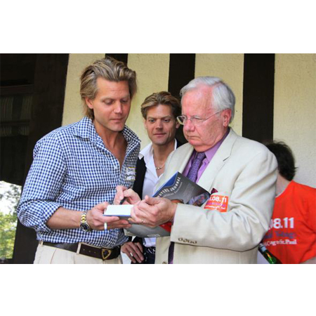
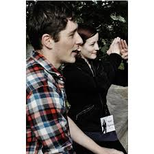
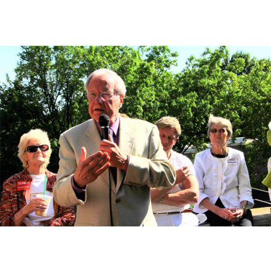
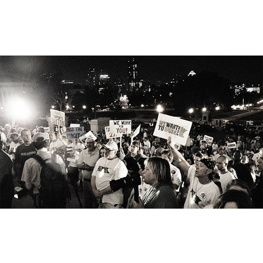
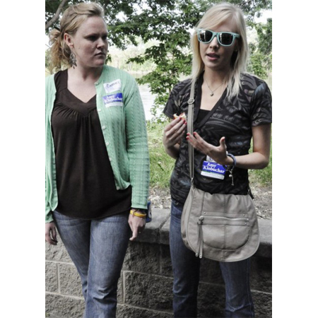

XTV
-

We were invited by YPM to join a private event with special guest and media icon, Bill Moyers.
The event took place at a lovely home on Summit Hill in Saint Paul, MN in the summer of 2011. Bill Moyers was present in support of democracy reform with Ranked Choice Voting -

Norell interviewing Jacob Frey at a YPM fundraising event where we also interviewed Minnesota Senator Amy Klobuchar.
Jacob Frey is now on the Minneapolis City Council of the 3rd Ward. -
 Bill Moyers with YPM and Ranked Choice Voting in Saint Paul, Minnesota.
CSPAN was also broadcasting the event. Norell represented XTV when she posed an interview question for Bill Moyers. -
 We were with protestors at the State Capital on Thursday, June 30th, 2011.
Minnesota workers came to take a stand against the threat of a government shutdown that would cut thousands of jobs and devastate the community. -
 We interviewed President of Young Progressive Majority of Minnesota [YPM], Sarah Clark, and Vice President, Cassidy Gardenier at a fundraising event to benefit families affected by the havoc tornados wreaked in North Minneapolis of 2011.
YPM believes in: *Respect of Human Rights and Freedoms for All People *Economic Responsibility (By Businesses and To Citizens) *Environmental Responsibility *The Right to Universal Healthcare *The Right to Free, Quality Education *The Right to Choose (Life Partners, Citizenship, Family Freedom) -

We interviewed Minnesota Senator Amy Klobuchar at a fundraising event, and questioned her on her campaign.